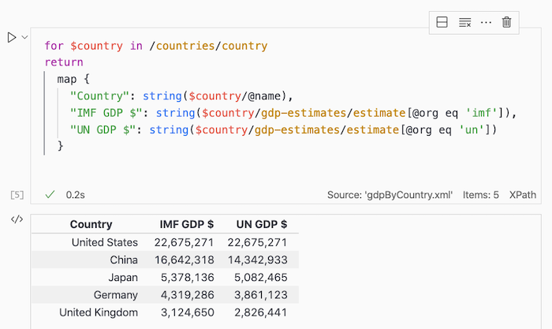

XPath Notebooks
This section describes DeltaXml's XPath Notebook extension for Visual Studio Code. Here we cover the fundamentals of using XPath 3.1 in a Visual Studio Code Notebook.

Why use an XPath Notebook?
XPath Notebooks are used for a wide range of purposes, including:
- Quick analysis of XML or JSON
- Learning and experimenting with XPath
- Tutorials on XPath
- Tutorials on a specific XML or JSON format
Quick Start
For this guide, we're assuming you've already installed the XPath Notebook extension for VS Code.
1. Install Node.js
This tool uses a builtin SaxonJS XSLT processor from Saxonica. This processor requires a recent installation of Node.js. Available for download from https://nodejs.org/en/.
2. Select an XML 'source' file
Open any XML (or JSON) source file in VS Code to set this as the context item for XPath expressions in an XPath Notebook. The most recent XML/JSON file opened is used.
3. Create and save a new XPath Notebook
From Visual Studio Code, open the Command Palette (⇧⌘P) and execute the New XPath Notebook command.
An untitled notebook with a Markdown cell and a Code cell will be shown,
initially the file is untitled with a .xbook file extension.
Save this notebook in the usual way (⌘S),
keeping the .xbook extension.
4. Edit and execute a new code cell
To add a new XPath code cell, press the + Code button at the top of the notebook.
In the new code cell, enter the /* XPath expression, then press ^Enter
to execute the cell.
The result cell is shown immediately below the Code cell.